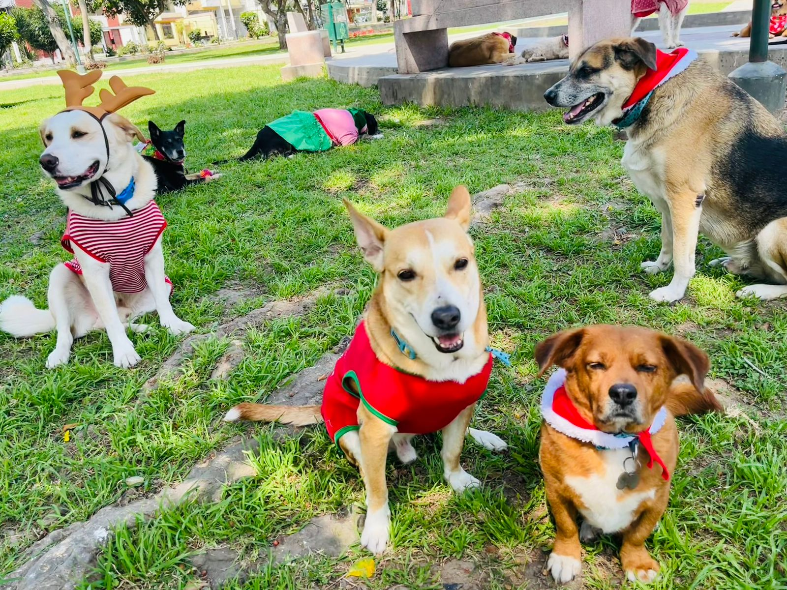
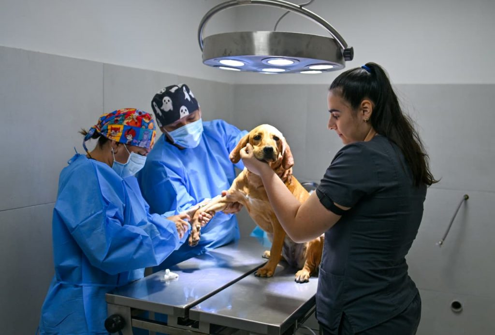
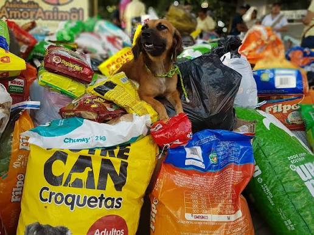
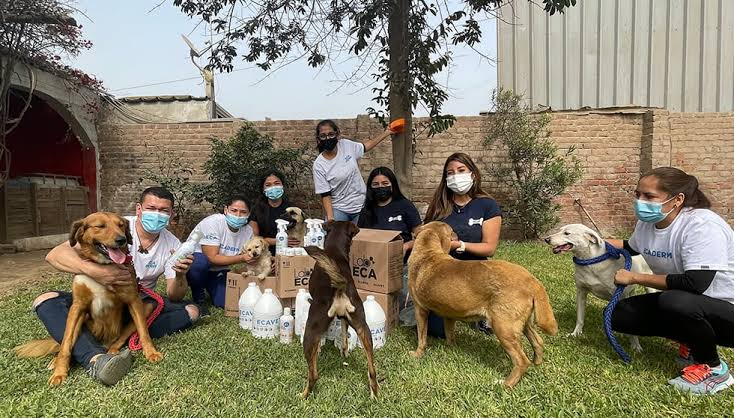

🐾
Adopción Responsable
Conoce a los perros y gatos rescatados que buscan un hogar definitivo y realiza un proceso de adopción transparente.
Saber másÚnete a nuestra jornada de servicio social para apoyar, cuidar y encontrar un hogar amoroso para mascotas en situación de abandono.

Ofrecemos diferentes formas de apoyo e intervención para garantizar el bienestar animal.
Conoce a los perros y gatos rescatados que buscan un hogar definitivo y realiza un proceso de adopción transparente.
Saber másBrindamos revisiones veterinarias básicas, desparasitación y vacunación temporal para animales rescatados.
Saber másRecibimos alimento balanceado, medicinas, mantas y juguetes para distribuirlos en albergues locales.
Saber másDescubre las jornadas y programas que realizaremos durante nuestro encuentro social.

Encuentro presencial donde podrás conocer a más de 30 mascotas buscando un hogar temporal o definitivo.
Inscribirse
Atención de desparasitación, limpieza básica y orientación nutricional para mascotas de la comunidad.
Ver horarios
Punto de acopio especial para reunir croquetas, latas de comida y mantas para albergues aliados.
Puntos de acopio
Taller informativo para familias dispuestas a acoger temporalmente a animales en recuperación.
Quiero ser hogarNo necesitas hacer un gran esfuerzo para marcar la diferencia. Puedes adoptar, realizar una donación, ofrecer tu tiempo como voluntario o simplemente compartir nuestra iniciativa con tus amigos.